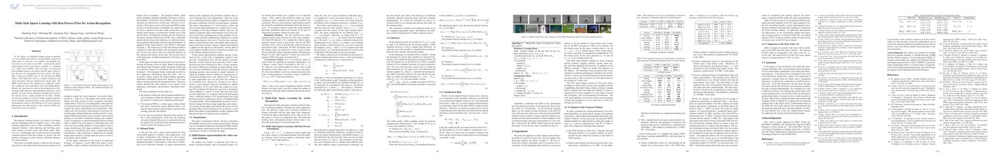
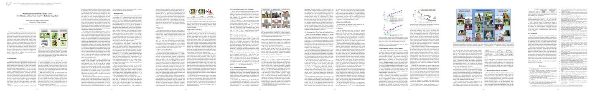
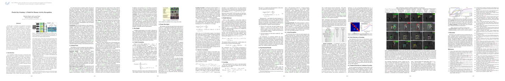
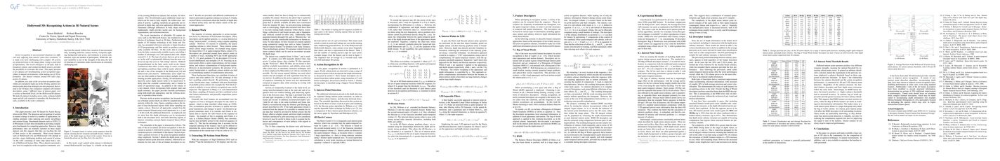
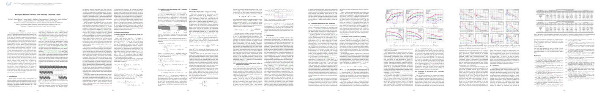
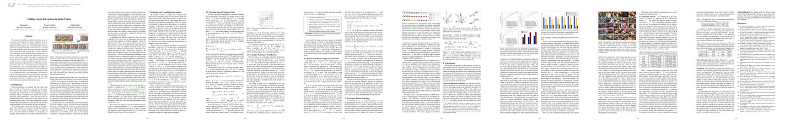
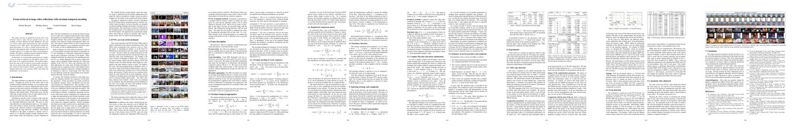
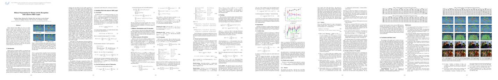

The 100 most frequent words in each paper are listed below each entry. Color is based on an LDA topic model with k = 7.
Notes: the topics here are much more vague than for the clustering of all CVPR2013 papers.
For an overview of activity recognition at CVPR13 see my blog post
Toggle the topics below to sort by (rough) category:
(0) discriminative (1) multimodal (2) structure/hierarchy (3) interactions (4) features (5) sequences (6) attributes
HON4D: Histogram of Oriented 4D Normals for Activity Recognition from Depth Sequences
Omar Oreifej, Zicheng Liu
Keywords: Activity Recognition, Kinect, Action Recognition, Histogram of Gradients, HOG, Histogram of Normals, HON, 4D Normals, Polychoron, MSR Action 3D, MSR Action Pairs, MSR Daily Activity, Depth, Shape, 4D, 3D
Omar Oreifej, Zicheng Liu
Keywords: Activity Recognition, Kinect, Action Recognition, Histogram of Gradients, HOG, Histogram of Normals, HON, 4D Normals, Polychoron, MSR Action 3D, MSR Action Pairs, MSR Daily Activity, Depth, Shape, 4D, 3D

[action, discriminative, space, box, spatiotemporal, distribution, accuracy, capture, human, figure, joint, feature, gesture, holistic, svm, pyramid, training] [shape, corresponding, note, consider] [recognition, previous, proposed, spatial, video, oriented, global] [sequence, number, unit] [depth, surface, normal, motion, orientation, histogram, descriptor, dataset, compute, order, gradient, skeleton, density, msr, local, computed, quantization, chair, poster, backpack, hat, lop, table, interest, jiang, occupancy, random, described, quantize, higher, compared, dollar, hog, better, place, outperforms] [temporal, experiment, based, color, selected, performance, regular] [activity, method, set, example, object, hand, compare]
Modeling Actions through State Changes
Alireza Fathi, James M. Rehg
Keywords: Action Recognition, State, Object, Smi-Supervised Learning, Egocentric
Alireza Fathi, James M. Rehg
Keywords: Action Recognition, State, Object, Smi-Supervised Learning, Egocentric

[action, model, training, svm, accuracy, figure, trained, feature, class, detection] [linear, corresponding, objective, learn] [recognition, video, previous, represent, test, segment, cluster] [describe, second, sequence] [order, performed, bag, vector, motion] [based, detector, result] [state, method, object, activity, coffee, open, region, set, frame, change, bread, recognizing, close, spoon, segmentation, pour, correspond, final, initial, interval, compare, fig, cup, environment, material, appearance, response, daily, train, introduce, instance, build, jelly, recognize, consistently, water, classifier, cheese, sugar, hand, spread, iien, iist, peanut, consistent, changed, apply, scoop, ffe, identifies, jar, jam]
Representing Videos Using Mid-level Discriminative Patches
Arpit Jain, Abhinav Gupta, Mikel Rodriguez, Larry S. Davis
Keywords: Action Recognition, Video Understanding
Arpit Jain, Abhinav Gupta, Mikel Rodriguez, Larry S. Davis
Keywords: Action Recognition, Video Understanding

[action, discriminative, training, class, approach, figure, human, select, transfer, patch, detection, feature, correspondence, vocabulary, strong, establish, olympics, representative, svm, spatiotemporal, simple, align, cost, establishing, score, euclidean, pose, trained, propose, ipfp, localization, representing, partition] [data, learn, demonstrate, algorithm] [video, test, recognition, represent, cluster, alignment, clustering, global, evaluate, throw] [learning, semantic, number, top, function, nearest, constituent] [motion, dataset, table, vector, query, background] [representation, based, performance, selected, term, selection, temporal, event, evaluation, perform, candidate] [object, label, distance, set, work, recognizing, consistent, appearance]
Evaluation of Color STIPs for Human Action Recognition
Ivo Everts, Jan C. van_Gemert, Theo Gevers
Keywords: action recognition, color, evaluation
Ivo Everts, Jan C. van_Gemert, Theo Gevers
Keywords: action recognition, color, evaluation

[action, human, discriminative, detection, ucf, accuracy, feature] [image, consider, single, represented, note] [recognition, video, codebook, achieved, spatial, scene] [level, function, number] [descriptor, gradient, local, table, dataset, extracted, best, higher, motion, scale, vector, average] [stip, color, stips, photometric, gabor, performance, based, harris, intensity, chromatic, representation, temporal, associated, detector, invariant, repeatability, combination, evaluation, energy, considering, reported, channel, typically, invariance, signal, dimensionality, full, outperform, differential, result, tensor, integration, power, opponent, focus, opposing, bank, quality] [recognizing, object, frame, response, set]
Event Recognition in Videos by Learning from Heterogeneous Web Sources
Lin Chen, Lixin Duan, Dong Xu
Keywords: Domain Adaptation, Event Recognition
Lin Chen, Lixin Duan, Dong Xu
Keywords: Domain Adaptation, Event Recognition

[training, svm, feature, propose, model, action, trained, human] [domain, source, target, data, adaptation, web, consumer, problem, heterogeneous, multiple, labeled, view, image, optimization, learn, existing, optimal, unlabeled, ccv, algorithm, setting, youtube, represented, visual, solving, note, dso, objective, learnt, kodak, regularizer, max, type, sift, mkl, sample, single, matrix, assume, effectively, cope, bing, effectiveness, infer, solve, convex, leveraging] [recognition, video, kernel, proposed, task, simultaneously] [learning, number, relevant, three, function] [dataset, vector, large, datasets, report] [event, based, performance] [method, set, work, weight, label, well, min]
Multi-task Sparse Learning with Beta Process Prior for Action Recognition
Chunfeng Yuan, Weiming Hu, Guodong Tian, Shuang Yang, Haoran Wang
Keywords:
Chunfeng Yuan, Weiming Hu, Guodong Tian, Shuang Yang, Haoran Wang
Keywords:
[action, feature, model, human, training, ucf, kth, error, svm, class, approach, joint, distribution, figure, improve, employ, discriminative, propose] [single, sample, visual, multiple, data, image, sift, matrix] [sparse, dictionary, task, recognition, video, proposed, sparsity, beta, prior, process, mtsl, test, posterior, learned, bayesian, represent, reconstruction, residual, common, geometric, symbolized, follow, shared, jth, swinging, gibbs, gamma, norm, expressed] [learning, individual, function, level, number] [local, histogram, sampling, table, vector, comparison, compared, descriptor, performed, average, combined, interest, density, listed] [representation, combination, based, associated, performance, formulation, total] [method, set, initial, jointly, inference]
Story-Driven Summarization for Egocentric Video
Zheng Lu, Kristen Grauman
Keywords: video summarization, egocentric, story
Zheng Lu, Kristen Grauman
Keywords: video summarization, egocentric, story

[approach, figure, score, capture, select, model] [visual, camera, objective, multiple, data, path] [video, scene, baseline, long] [summarization, input, three, number, measure, individual, text] [sampling, motion, compute, computed, random] [subshots, egocentric, chain, subshot, summary, story, selected, diversity, user, based, novel, uniform, total, good, news, adl, ute, term, event, quality, selection, metric, study, queue, making, priority, progress, color, coherent, keyframes, connecting, include, activation, temporal, generate, boundary, key, candidate, selecting, approximate, form] [method, object, set, work, original, graph, segmentation, well, activity, frame, daily, example, pattern]
Context-Aware Modeling and Recognition of Activities in Video
Yingying Zhu, Nandita M. Nayak, Amit K. Roy-Chowdhury
Keywords:
Yingying Zhu, Nandita M. Nayak, Amit K. Roy-Chowdhury
Keywords:

[model, action, feature, figure, approach, human, space, training] [algorithm, continuous, problem, framework, image, matrix] [recognition, baseline, spatial, video, recall, precision, proposed, learned, scene] [detected, time, number, agent, learning, function, group, duration] [motion, vector, interest, dataset, complex, size] [temporal, modeling, based, representation, event] [activity, context, person, release, virat, structural, method, frame, defined, region, object, segmentation, inference, nth, work, example, classifier, moving, vehicle, label, potential, greedy, distance, set, search, optimum, recognized, tcij, scij, graph, jointly, normalized, compatibility, developed, recognizing, computer, weight, incorrectly]
Watching Unlabeled Video Helps Learn New Human Actions from Very Few Labeled Snapshots
Chao-Yeh Chen, Kristen Grauman
Keywords:
Chao-Yeh Chen, Kristen Grauman
Keywords:
[training, pose, action, human, body, figure, approach, accuracy, space, class, stanford, riding, svm, feature, bounding] [unlabeled, data, labeled, domain, adaptation, image, learn, source, people, note] [video, recognition, test, prior, idea, baseline, learned] [learning, system, additional, number, small, nearest, annotation, relevant, function] [motion, real, dataset, hollywood, impact, datasets] [novel, representation, based, poselet, account, generate, generic, poselets] [set, synthetic, static, method, activity, manifold, original, pav, pascal, object, person, neighbor, train, label, augment, work, extrapolate, appearance, map, category, denote, expand, lle, nonlinear, explore, example, well]
Poselet Key-Framing: A Model for Human Activity Recognition
Michalis Raptis, Leonid Sigal
Keywords: Activity Recognition, Discriminative Keyframes, Video Analysis
Michalis Raptis, Leonid Sigal
Keywords: Activity Recognition, Discriminative Keyframes, Video Analysis
[model, action, human, discriminative, detection, pose, localization, bounding, training, accuracy, scoring, score, approach, capture, box, figure, feature, propose, holistic] [framework, image, algorithm] [video, recognition, proposed, spatial, test, structure, dynamic, indicates] [latent, learning, pairwise, function, number, positive, sequence, detected, rate, semantic, second] [hog, local, average, motion, table, descriptor] [temporal, keyframes, poselets, poselet, unary, representation, based, bow, keyframe, performance, approachperson, partial, key, entire, selected, legsextended, activation, modeling, temporally, streaming, rely, focus, allows, spatially, selection, ability, localize] [set, activity, frame, method, static, recognizing]
3D Visual Proxemics: Recognizing Human Interactions in 3D from a Single Image
Ishani Chakraborty, Hui Cheng, Omar Javed
Keywords: Visual Proxemics, 3D people layout, semantic constraints, RANSAC
Ishani Chakraborty, Hui Cheng, Omar Javed
Keywords: Visual Proxemics, 3D people layout, semantic constraints, RANSAC

[model, figure, human, pose, estimation, feature, space, detection, approach, capture] [camera, people, face, visual, height, image, proxemics, layout, outlier, estimate, shape, consider, constraint, ransac, single, shot, ground, crowd, perspective, linear, plane, proxemes, framework, proxeme, robust, position, photo, estimated, visibility, center, family, location, audience, horizon, rectification, classification, type, derived, typical] [spatial, proposed, indicates] [group, interaction, social, semantic, number, analysis, detected, detect, level] [depth, table, described, size, average, compute, dataset, vector, better, standard] [based, performance] [set, distance, method]
Expanded Parts Model for Human Attribute and Action Recognition in Still Images
Gaurav Sharma, Frdric Jurie, Cordelia Schmid
Keywords: human analysis, part-based, discriminative, margin maximization, expanded parts, attributes, human
Gaurav Sharma, Frdric Jurie, Cordelia Schmid
Keywords: human analysis, part-based, discriminative, margin maximization, expanded parts, attributes, human

[human, model, discriminative, training, scoring, action, pose, class, bof, feature, propose, score, spm, figure, willow, patch, stanford, expanded, current, attribute, explain, approach, detection, estimation, qualitative, validation, bounding, template, trained, distribution] [image, learnt, learn, corresponding, algorithm, data, linear, optimization, sift] [recognition, baseline, spatial, proposed, norm, partially, test] [learning, number, function, high, positive, collection, three, row, latent] [database, large, better, best, sampling, dataset, vector] [based, performance, full, representation, loss, good, associated, component] [method, object, context, map, work, appearance, train, recognizing, set, well, stochastic, example]
Decoding Children's Social Behavior
James M. Rehg, Gregory D. Abowd, Agata Rozga, Mario Romero, Mark A. Clements, Stan Sclaroff, Irfan Essa, Opal Y. Ousley, Yin Li, Chanho Kim, Hrishikesh Rao, Jonathan C. Kim, Liliana Lo Presti, Jianming Zhang, Denis Lantsman, Jonathan Bidwell, Zhefan Ye
Keywords:
James M. Rehg, Gregory D. Abowd, Agata Rozga, Mario Romero, Mark A. Clements, Stan Sclaroff, Irfan Essa, Opal Y. Ousley, Yin Li, Chanho Kim, Hrishikesh Rao, Jonathan C. Kim, Liliana Lo Presti, Jianming Zhang, Denis Lantsman, Jonathan Bidwell, Zhefan Ye
Keywords:

[detection, feature, accuracy, approach, training, error, trained, figure, score] [face, estimate, camera, domain] [behavior, video, recognition, detecting, prediction, clip] [child, ball, social, examiner, book, play, analysis, interaction, engagement, audio, gaze, stage, smile, number, dyadic, touched, adult, eye, experimental, speech, tracker, structured, additional, head, multimodal, tickle, decoding, detected, parsing, detect, duration, true, autism, predicting, tool, predicted, developmental, georgia, discrete, degree, positive, measure, mmdb, false, testing, kinect, identify] [table, dataset, order, extracted, combined, hat] [based, event, key, assessment, performance] [activity, set, goal, work, tracking, introduce, predict, object, attention, context]
An Approach to Pose-Based Action Recognition
Chunyu Wang, Yizhou Wang, Alan L. Yuille
Keywords: pose estimation, action recognition, feature learning
Chunyu Wang, Yizhou Wang, Alan L. Yuille
Keywords: pose estimation, action recognition, feature learning

[pose, action, body, joint, human, figure, estimation, mining, approach, gesture, keck, model, accuracy, ucf, training, holistic, sport, transaction, left, contrast, discriminative, art, capture, frequently, call, challenging, turn, going, mine, growth, compose, pursue] [data, image, estimated, represented, camera, extract, estimate, location, learn] [recognition, video, proposed, spatial, represent, dictionary, intersection] [three, rate, high, detect] [motion, local, dataset, support, table, comparison, described, vector] [temporal, performance, based, representation, color, quantized] [method, set, state, work, frame, appearance, apply, compare]
Hollywood 3D: Recognizing Actions in 3D Natural Scenes
Simon Hadfield, Richard Bowden
Keywords: action recognition, 3d, actions, hollywood, depth, stereo, 3.5d, 4d, interest points
Simon Hadfield, Richard Bowden
Keywords: action recognition, 3d, actions, hollywood, depth, stereo, 3.5d, 4d, interest points
[action, feature, detection, aware, approach, human, training] [data, visual, image, calculated, camera, gaussian] [recognition, natural, video, spatial, precision, sparse, test] [number, detected, measure, relative, additional, correct] [interest, depth, point, descriptor, saliency, rmd, bag, equation, hessian, standard, extended, including, motion, average, threshold, dataset, performed, hollywood, local, histogram, large, salient, extracted, provided, separable, table, laptev, dense, stream, provide, order, paper, greater, content, sampling, background, integral, datasets, prove, better] [harris, based, intensity, temporal, performance, range, combination] [appearance, work, example, state, structural, well]
Better Exploiting Motion for Better Action Recognition
Mihir Jain, Herv Jgou, Patrick Bouthemy
Keywords: action recognition, motion compensation, affine motion, kinematic features, VLAD
Mihir Jain, Herv Jgou, Patrick Bouthemy
Keywords: action recognition, motion compensation, affine motion, kinematic features, VLAD

[action, human, model, feature, approach, accuracy, bof, figure, art, svm] [camera, image, consider, visual, corresponding, existing, note, horizontal] [recognition, video, optical, dominant, volume, proposed, global, residual, codebook] [combining, additional] [motion, descriptor, local, computed, vlad, table, hof, trajectory, compensated, kinematic, mbh, impact, computation, vector, hog, technique, large, better, compensation, dense, point, dataset, improves, improvement, curl, average, compute, complementary, shear, background, scalar, olympic, paper, best, interest, sake, introduced, involved] [encoding, performance, combination, reported, encode, representation, scheme, based] [tracking, method, set, state, moving, introduce, pattern, map]
Spatio-temporal Depth Cuboid Similarity Feature for Activity Recognition Using Depth Camera
Lu Xia, J.K. Aggarwal
Keywords: Spatio temporal interest point, depth image, activity recognition, Kinect
Lu Xia, J.K. Aggarwal
Keywords: Spatio temporal interest point, depth image, activity recognition, Kinect

[feature, action, human, figure, accuracy, joint, denotes, body, detection, training] [algorithm, image, location, extract, data, position, existing] [recognition, video, pixel, spatial, volume, test] [number, function, similarity, describe, experimental, second] [depth, cuboid, local, rgb, interest, noise, dstip, dcsf, descriptor, nxy, size, point, dataset, histogram, better, correction, dstips, real, scale, skeleton, posture, skeletal, appear, table, extracted, background, voxels, magnitude, occupancy, movement, extraction, adaptable, comparison, average] [detector, stips, based, temporal, stip, signal] [activity, work, response, computer, object, method, category, build, vision]
Recognize Human Activities from Partially Observed Videos
Yu Cao, Daniel Barrett, Andrei Barbu, Siddharth Narayanaswamy, Haonan Yu, Aaron Michaux, Yuewei Lin, Sven Dickinson, Jeffrey Mark Siskind, Song Wang
Keywords:
Yu Cao, Daniel Barrett, Andrei Barbu, Siddharth Narayanaswamy, Haonan Yu, Aaron Michaux, Yuewei Lin, Sven Dickinson, Jeffrey Mark Siskind, Song Wang
Keywords:
[training, human, feature, action, trained, spatiotemporal, class, accuracy, figure, evaluated, overlap] [problem, multiple, cross] [video, darpa, recognition, test, observed, mssc, proposed, baseline, sparse, prediction, segment, likelihood, coding, partially, gap, gapfilliing, ratio, recall, mmed, precision, gapfilling, subsequence, long, posterior, length, natural, achieve, short, dynamic, fully, general, evaluate, constructed, construct, mixture, early, presented, unobserved, special, handle, practical, studied] [observation, three, number, duration, eye, stage] [better, datasets, comparison, complex, dataset, average, interest, large, vector] [temporal, performance, evaluation, include, perform, event, full] [activity, method, frame, recognizing, set, computer, recognized, program]
Unconstrained Monocular 3D Human Pose Estimation by Action Detection and Cross-Modality Regression Forest
Tsz-Ho Yu, Tae-Kyun Kim, Roberto Cipolla
Keywords: Human Pose Estimation, Random Forest, Hough Forest, Regression Forest
Tsz-Ho Yu, Tae-Kyun Kim, Roberto Cipolla
Keywords: Human Pose Estimation, Random Forest, Hough Forest, Regression Forest

[pose, action, human, estimation, detection, regression, joint, forest, wave, training, class, model, feature, body, figure, localisation, ape, accuracy, hpe, dpm, approach, monocular, box, trained, unconstrained, bend, split, articulated, clap, deformable, dance, feasibility, evaluated, current, pictorial, challenging, error, spatiotemporal, knowledge, tree, balance, leaf] [estimate, image, data, framework, estimated, multiple, ground, infer, corresponding, sample] [proposed, recognition, structure, video, simultaneously] [testing, learning, detected, time, kinect, input, high] [dataset, depth, vector, performed, motion, combined, background, table] [truth] [method, node, frame, hand, computer]
Detection of Manipulation Action Consequences (MAC)
Yezhou Yang, Cornelia Fermller, Yiannis Aloimonos
Keywords:
Yezhou Yang, Cornelia Fermller, Yiannis Aloimonos
Keywords:

[action, human, model, figure, detection, distribution] [visual, algorithm, sample, image, target, robust, problem, consider] [recognition, optical, video, understanding, process, volume, natural, case, proposed, represent, pixel, detecting, segment] [system, sequence, time, semantic, number] [point, movement, dataset, motion, sampling, described, depth, provide, order] [color, based, term, ability, performance] [segmentation, object, method, tracking, manipulation, set, active, graph, appearance, consequence, tracked, goal, condition, attention, vision, computer, weighted, edge, area, cut, vsg, division, change, intelligent, mac, monitor, initial, stochastic, example, weight, topological, assemble, denote, international, work, monitoring, fundamental, represents, crucial, considered]
First-Person Activity Recognition: What Are They Doing to Me?
Michael S. Ryoo, Larry Matthies
Keywords: human activity recognition, first-person computer vision
Michael S. Ryoo, Larry Matthies
Keywords: human activity recognition, first-person computer vision

[human, figure, training, approach, detection, feature, wave, pyramid] [optimal, continuous, multiple, camera, visual, target, matrix] [structure, kernel, video, recognition, global, match, optical, hug, pet, observer, advantage, superior, alignment, baseline, previous, represent, punch, robot, shake, observed, constructed, humanoid, throw, version, punching, idea, measured, subsection, learned, arg, considers, evaluate] [system, learning, function, number, hierarchical, time, detected, matching, positive] [motion, local, histogram, dataset, paper, order, better, average, best, descriptor, computed, point] [temporal, gram, evaluation, representation, performance, based, result, ability] [activity, distance, example, person, recognizing, recognize]
Finding Group Interactions in Social Clutter
Ruonan Li, Parker Porfilio, Todd Zickler
Keywords:
Ruonan Li, Parker Porfilio, Todd Zickler
Keywords:
[approach, detection, localization, action, figure, accuracy, bounding] [optimal, consider, matrix, problem, labeled, framework, single] [video, detecting, recognition, long, ensemble, proposed, evaluate, represent] [interaction, matching, exemplar, time, pairwise, input, group, individual, social, three, unit, agent, number, false, detected, system, localizing, positive, occur, small, relative, learning, similarity, collection, annotated, measure, distinctive, larger, matched, instantaneous, localized, neighborhood, wnm, voting, simply, lowest] [descriptor, best, compute, large, table, report, described, database, dataset, average] [temporal, metric, performance, representation, based, selected] [interval, search, tracking, category, set]
Online Dominant and Anomalous Behavior Detection in Videos
Mehrsan Javan Roshtkhari, Martin D. Levine
Keywords: Surveillance, Video parsing, Hierarchical scene modeling, Behavior learning, Anomaly detection, Bag of video words, Contextual information, Spatio-Temporal compositions
Mehrsan Javan Roshtkhari, Martin D. Levine
Keywords: Surveillance, Video parsing, Hierarchical scene modeling, Behavior learning, Anomaly detection, Bag of video words, Contextual information, Spatio-Temporal compositions

[detection, approach, model, figure, space, spatiotemporal, template] [algorithm, consider, represented, sample, data, learnt] [video, dominant, spatial, behavior, scene, pixel, abnormal, ensemble, stvs, detecting, online, abnormality, clustering, anomalous, understanding, codebook, construct, oriented, proposed, volume, optical, contextual, capable, behaviour, achieved, pdf, cluster, fuzzy, probabilistic, employed, anomaly, dynamic, simultaneously, observed, utkt, usks, rare, constructed, employing, bov] [level, similarity, hierarchical, learning, number, rate, detect, analysis, topic] [local, background, dataset, order, gradient, described, large, descriptor, performed] [temporal, based, surveillance] [method, set, activity, pattern, frame, change]
Cross-View Action Recognition via a Continuous Virtual Path
Zhong Zhang, Chunheng Wang, Baihua Xiao, Wen Zhou, Shuang Liu, Cunzhao Shi
Keywords:
Zhong Zhang, Chunheng Wang, Baihua Xiao, Wen Zhou, Shuang Liu, Cunzhao Shi
Keywords:

[action, feature, accuracy, correspondence, class, approach, human, training, discriminative, propose, achieves] [virtual, view, target, labeled, unlabeled, source, path, corresponding, constraint, vvkc, algorithm, multiple, continuous, transformation, domain, ixmas, problem, mode, matrix, robust, discrimination, vvk, maximize, inner, parameter, max, rotation, extract, linear, maximizing, theoretic, gaussian, working, sample, approximated, objective, kau, kat] [recognition, kernel, partially, proposed, construct, observed, video, learned] [similarity, three, learning] [table, better, average, computed, interest, compute, dataset, local, sampling, vector, equation] [representation, temporal, performance, based, key] [method, set, work, recognizing, change, pattern]
Event Retrieval in Large Video Collections with Circulant Temporal Encoding
Jrme Revaud, Matthijs Douze, Cordelia Schmid, Herv Jgou
Keywords: large-scale, video retrieval, event retrieval
Jrme Revaud, Matthijs Douze, Cordelia Schmid, Herv Jgou
Keywords: large-scale, video retrieval, event retrieval
[detection, approach, figure, pca] [image, web, domain, single, assumption, visual] [video, alignment, task, length, proposed, case, presented] [time, matching, number, similarity, complexity, sequence, small, description, independent] [database, query, cte, retrieval, fourier, vector, mmv, copy, complex, descriptor, evve, dataset, table, recvid, large, product, frequency, technique, circulant, memory, regularization, paper, concert, quantization, applied, comparison, performed, average, compute, inverse, william, ndcr, wedding, described, shift, averaging, kate, hough, compressed, distractors, size, mapped, compression] [event, temporal, performance, evaluation, encoding, representation, metric, partial] [frame, search, method, set, requires, state, compare, well]
Action Recognition by Hierarchical Sequence Summarization
Yale Song, Louis-Philippe Morency, Randall Davis
Keywords: Action Recognition, Hierarchical Model, Conditional Random Fields
Yale Song, Louis-Philippe Morency, Randall Davis
Keywords: Action Recognition, Hierarchical Model, Conditional Random Fields

[feature, approach, model, action, discriminative, human, figure, training, body, accuracy, joint] [algorithm, learn, single, data, multiple, optimal, parameter, optimization] [recognition, length, posterior, previous] [sequence, learning, hierarchical, latent, summarization, layer, function, observation, gate, super, log, number, grouping, hierarchy, hidden, procedure, deep, armgesture, complexity, similarity, difference, group, natops, experimental, conditional, semantic, three, analysis, variable, wst, second, belief, testing, learns, sublinearly, neural, input, abstract, incremental] [dataset, local, datasets, equation, order, complex, average, vector] [representation, temporal, summary, based, performance, result, term] [set, activity, work, solution, frame, label, original]
Spatiotemporal Deformable Part Models for Action Detection
Yicong Tian, Rahul Sukthankar, Mubarak Shah
Keywords:
Yicong Tian, Rahul Sukthankar, Mubarak Shah
Keywords:

[action, sdpm, detection, spatiotemporal, root, model, deformable, feature, space, cycle, bounding, localization, dpm, ucf, capture, score, volumetric, employ, training, human, variation, ith, pyramid, discriminative, figure, svm, template, box, weizmann, overlap, trained, select, achieves, approach, enable, cell, dpms, automatically] [corresponding, single] [video, volume, recognition, learned, test, structure, observed, clip, evaluate, spatial, global] [number, level, learning, small, positive, time, determined, detect] [dataset, descriptor, complex, background, large, motion, computed, better, standard, best] [temporal, selected, performance] [object, set, train, deformation, appearance, search, example, frame, well]
Sampling Strategies for Real-Time Action Recognition
Feng Shi, Emil Petriu, Robert Laganire
Keywords:
Feng Shi, Emil Petriu, Robert Laganire
Keywords:

[action, feature, root, model, human, kth, approach, accuracy, patch, training, select, challenging, discriminative, realistic] [visual, image] [video, recognition, spatial, kernel, intersection, observed, proposed, structure] [number, high, three, eye] [sampling, dense, local, random, sampled, size, table, integral, average, interest, resolution, descriptor, point, background, dataset, half, dimension, speed, density, computation, large, better, grid, histogram, standard, mbh, computationally, report, computational, datasets, codewords, hof, gpu, best, cpu, factor] [performance, randomly, based, full, total, temporal, uniform, good] [method, computer, vision, object, set]
Bilinear Programming for Human Activity Recognition with Unknown MRF Graphs
Zhenhua Wang, Qinfeng Shi, Chunhua Shen, Anton van_den_Hengel
Keywords:
Zhenhua Wang, Qinfeng Shi, Chunhua Shen, Anton van_den_Hengel
Keywords:
[human, model, figure, body, error, feature, joint, discriminative, training, svm, action] [problem, solve, consider, solving, image, data, coordinate, max, estimate] [recognition, video, global, prediction] [function, relative, learning, group, predicting, second, belief, degree, latent, observation] [local, dataset, datasets, vector, descriptor, outperforms, random, table] [based, energy] [graph, method, bilinear, map, activity, blp, inference, mrf, unknown, program, relaxation, label, branch, bound, solution, min, node, pattern, person, mcsvm, qinit, mrfs, set, badminton, edge, har, ssvm, predict, structural, green, confusion, ascent, tennis, optimisation, synthetic, apply, work, style, isolate, vision, computer]
Augmenting Bag-of-Words: Data-Driven Discovery of Temporal and Structural Information for Activity Recognition
Vinay Bettadapura, Grant Schindler, Thomas Ploetz, Irfan Essa
Keywords: Activity Recognition, Anomaly Detection, Bag of Words, Skill Assessment, Surveillance, Video
Vinay Bettadapura, Grant Schindler, Thomas Ploetz, Irfan Essa
Keywords: Activity Recognition, Anomaly Detection, Bag of Words, Skill Assessment, Surveillance, Video

[figure, human, approach, model, space, training, action, capture, pyramid] [data] [recognition, video, baseline, structure, global, behavior, represent, cluster] [time, sequence, learning, second, duration, three, analysis, semantic] [local, standard, table, dataset, histogram, order, random, complex, datasets, vector] [bow, temporal, event, observable, encoding, augmented, regular, based, randomly, elapsed, sequential, skill, quantized, assessment, soccer, unsupervised, interspersed, surveillance, surgical, representation, statistical, evaluation, ordering, automatic, consecutive, modeling, ocean, generated, waas, total, main, player, outperform, cumulative, underlying] [activity, set, structural, recognizing, method, vehicle, augment, example]
A Thousand Frames in Just a Few Words: Lingual Description of Videos through Latent Topics and Sparse Object Stitching
Pradipto Das, Chenliang Xu, Richard F. Doell, Jason J. Corso
Keywords: video to text, video understanding, multimodal topic model, natural language
Pradipto Das, Chenliang Xu, Richard F. Doell, Jason J. Corso
Keywords: video to text, video understanding, multimodal topic model, natural language

[human, model, training, template, detection, action, feature, figure, approach] [visual, image, data] [video, natural, test, recall, precision, short] [topic, concept, level, language, lingual, low, description, system, man, number, middle, semantic, woman, top, cooking, keywords, sentence, high, output, latent, text, tripartite, group, mmlda, rock, relevant, generating, lower, predicted, rouge, trecvid, bacon, town, word, hall, pan, three, metal, annotation, small, corpus, ranked] [dataset, table, large, average] [event, based, color, evaluation] [set, object, person, method, graph, work, vision, computer]
3D R Transform on Spatio-temporal Interest Points for Action Recognition
Chunfeng Yuan, Xi Li, Weiming Hu, Haibin Ling, Stephen Maybank
Keywords:
Chunfeng Yuan, Xi Li, Weiming Hu, Haibin Ling, Stephen Maybank
Keywords:
[feature, transform, fusion, action, bovw, kth, radon, distribution, approach, sin, pca, ucf, geometrical, figure, propose, human, accuracy, svm, achieves, spatiotemporal, employ, model, aware, denotes, supported, discriminative, science] [matrix, visual, parameter, effectiveness, robust, position] [kernel, video, recognition, proposed, global, calculation, contextual, combine, test, codebook, achieve, represent, referred] [similarity, discrete, number, detected, pairwise, second, function, describe, nearest] [interest, local, point, average, higher, table, computed, compute, dataset, extracted, vector, cuboid] [based, representation, evaluation, form, invariant, performance, perform] [context, method, object, set, apply, computer, normalized, work]